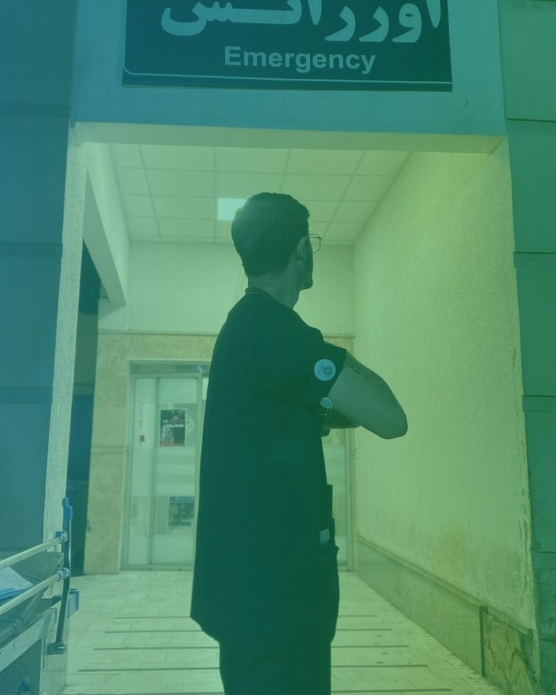
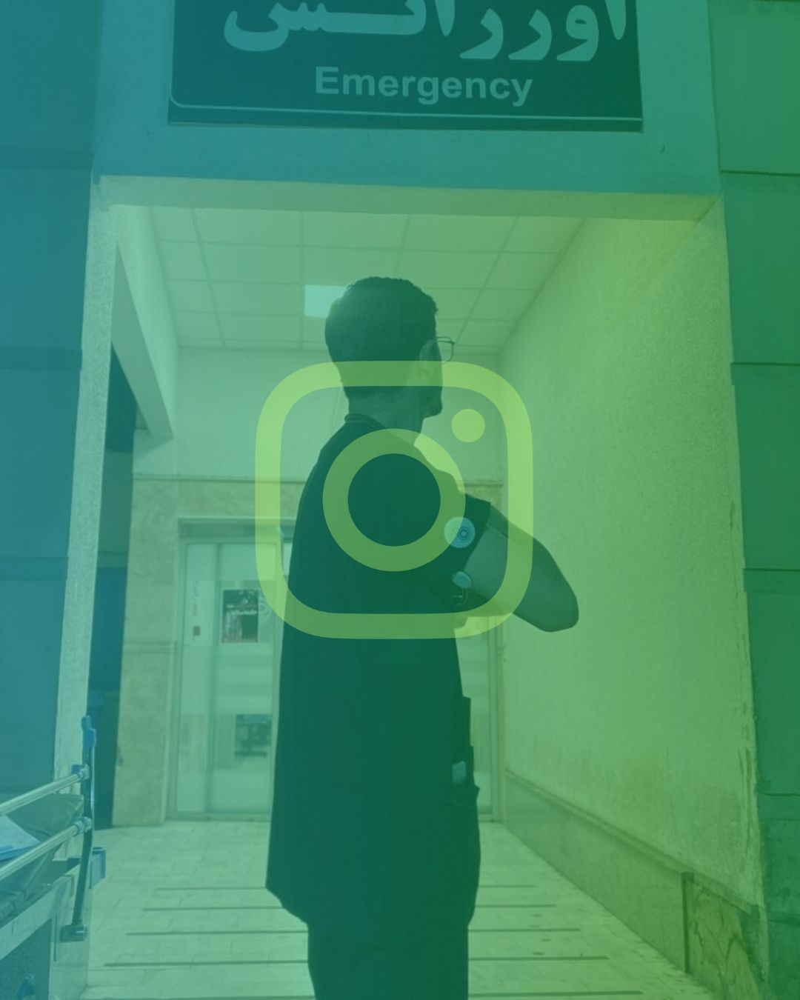
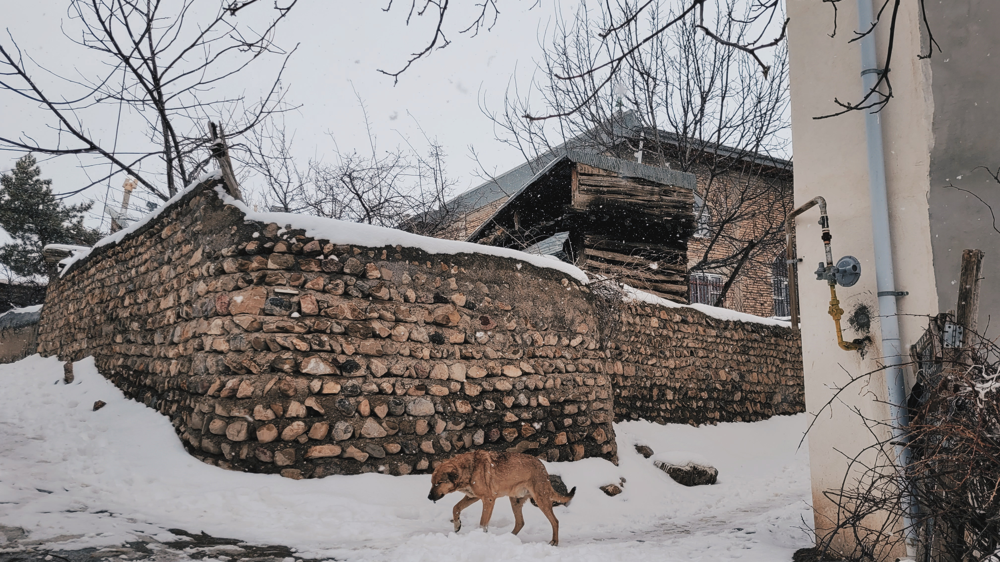

از سفیدیِ قند تا روپوشِ سفید؛ مدیریت دیابت در کشیکهای ۲۴ ساعته
چگونه میتوان میان صدای آلارم سنسور قند خون و زنگ احیای اورژانس تعادل برقرار کرد؟ روایتی از چالشهای واقعی یک پزشک دیابتی در بخشهای جراحی و اطفال...
از سفیدیِ قند تا روپوشِ سفید | سفیر و مدرس دیابت
اینجا خانهی نوشتههای من از سالها همزیستی با دیابت نوع یک، مدیریت قند خون در کشیکهای سنگین بیمارستان، آموزش به هممسیران دیابتی و طراحی پروژههای بینالمللی فدراسیون جهانی دیابت (YLD) است.

پزشک، سفیر و مدرس دیابت | عضو برنامه رهبران جوان دیابت

چگونه میتوان میان صدای آلارم سنسور قند خون و زنگ احیای اورژانس تعادل برقرار کرد؟ روایتی از چالشهای واقعی یک پزشک دیابتی در بخشهای جراحی و اطفال...
نگاهی کاربردی و ساده به پایش مداوم قند خون (CGM) و تکنیکهایی که به ما کمک میکنند نوسانات خستهکننده قند خون را به حداقل برسانیم.

How lived experience transforms patient education: insights from designing community-driven diabetes workshops and empowering young adults living with T1D.
As a Medical Doctor and Diabetes Advocate, I design and lead initiatives focused on T1D education, stigma reduction, and accessible patient empowerment.
Interactive workshops connecting newly diagnosed youth with experienced medical mentors living with diabetes.
Explore Project Roadmap →Practical evidence-based strategies for healthcare professionals and students balancing high-stress shifts with glycemic control.
Read Guidelines →